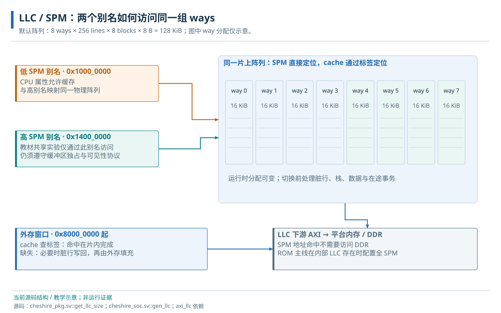

第三篇 · 互连与存储系统
11 · Cache、LLC/SPM 与存储路径
区分缓存副本、地址别名与共享物理阵列。
本章目录 · 节与小节
区分缓存副本、地址别名与共享物理阵列。 前置：07 · 地址空间与访问属性、10 · 接口适配与 RegBus。
11.1 地址、缓存副本与物理存储
缓存把数据行保存在近端，用索引选择候选组、标签和有效位判断命中。缺失时从下级取回，写回缓存还可能先把被替换的脏行写下去。写回（WB）允许修改暂留缓存；写穿（WT）把写向下传播，但仍有读副本和写缓冲。外部设备访问同一物理地址时，必须明确这些副本如何同步。
11.1.1 同一阵列的缓存与 SPM 用途
SPM 是软件直接管理固定地址的方式，SRAM 是实现存储阵列的技术，两者描述不同层次。当前 LLC 阵列可按 way 分给缓存或 SPM；默认容量为 8 ways × 256 lines × 8 blocks × 64/8 bytes = 128 KiB。启动全部分为 SPM 后，CPU 代码和栈实际依赖这份阵列。

11.2 LLC/SPM 的配置和访问路径
CPU 的低 SPM 窗口从 0x10000000 起，可按地址属性进入 L1；0x14000000 是同一阵列的非缓存数据别名，在 LLC 前重映射回低地址。两个窗口共享物理字节。若先用低别名产生缓存副本，再用高别名访问，不同观察者仍可能看到不同内容。当前高别名未包含在默认 SPM 执行区中，本书把它用于共享数据，代码仍从低地址执行。
11.2.1 一次缓存缺失与一次 SPM 访问
缓存行（cache line）是 LLC 查标签、填充和替换的基本单位。默认一行有 8 个 64 bit block，共 64 字节；一个 way 有 256 行，共 16 KiB。地址低位选择行内字节，中间部分选择行索引，剩余部分参与标签匹配。8 个 way 为同一索引提供 8 个候选位置，故整体数据容量是 128 KiB。
- 进入与拆分：访问可缓存的外存地址时，LLC 将 AXI burst 按缓存行边界拆成内部描述符。描述符保存地址、原事务 ID、读写方向及完成标记，避免把一个跨行 burst 当作一次简单 SRAM 读。
- 标签查询：标签和有效位决定命中。命中路径可送到读写单元；缺失进入替换/填充路径。是否能超越已有请求还受同 ID 顺序约束。
- 脏行替换：如果被替换行已修改，evict 单元先把旧行写回它原来的外存地址，并等待写响应。旧标签用于恢复旧地址，不能误用新请求地址。
- 填充与访问：refill 单元从下游读新行并写入阵列，再完成原访问。一次 CPU 读因而可能同时诱发下游写回与读填充；延迟取决于缓存状态和下游应答。
SPM 访问走另一种解释：地址直接选定已分配给 SPM 的 way 和字节，不需要用标签判断“该行是否缓存了某个 DDR 地址”，也不因普通 SPM 读而从 DDR 填充。它复用 LLC 的数据阵列与部分请求路径。启动时所有 way 用作 SPM，外存访问可从 LLC 的旁路通道向下游推进；这解释了“保留 LLC 实例”与“启用外存缓存”为何是两个决定。
源码静态确认：本地LLC 设计说明的 Transaction Split、Eviction and Refilling；实现为 axi_llc_top、axi_llc_hit_miss、axi_llc_evict_unit、axi_llc_refill_unit。Cheshire 用 get_llc_size 计算报告容量，以 gen_llc 路径连接数据与配置接口。
11.2.2 容量参数与出口组合
Cfg.LlcSetAssoc/LlcNumLines/LlcNumBlocks 与 AxiDataWidth 决定阵列容量。LlcOutConnect=1、LlcNotBypass=1 保留 LLC/SPM 和外存出口；1/0 走外存旁路并移除内部 SPM；0/0 关闭该出口；0/1 会导致地址生成与实际实例不一致，应避免采用。取消缓存用途时也要安排原本驻留于阵列的启动空间。
11.2.3 寄存器提交与 way 切换
LLC 控制基址为 0x03001000。CFG_SPM(+0/+4) 是 way 位图，CFG_FLUSH(+8/+0xc) 选择清理的 way，COMMIT(+0x10) 提交，FLUSHED(+0x18/+0x1c) 用于观察清理完成，BIST_STATUS(+0x48) 表示自测状态。软件写配置后要等相应完成状态；切走 SPM way 前应迁移其中代码/栈/数据、停止相关发起者并处理脏数据和在途请求。axi_llc_reg32_set_spm 只承担寄存器操作，不替应用迁移栈。
11.3 从启动 SPM 到共享缓冲区
11.3.1 回收一个 SPM way 的软件前置条件
假设未来应用希望把高端 way 重新用于缓存。默认 ROM 的早期栈位于 SPM 高端，因此这个 way 可能正保存当前返回地址和局部变量。应用必须先在保留的 SPM 或已就绪的 DRAM 中安排新栈和执行环境，停止其他访问者，再调用切换流程。如果一边执行依赖该 way 的函数，一边让它失去 SPM 用途，即使寄存器写入完全正确，下一次栈访问也会失败。
对于反方向的 cache→SPM，硬件需要处理待替换的脏数据并完成配置提交；软件仍负责确保没有设备继续使用旧解释的地址。容量分配、数据可见性和缓冲区所有权分别解决“空间在哪里”“观察到哪一版值”“谁现在可以写”三个问题。具体操作应先推演这三个问题，再写寄存器。
应用链接区、运行栈和共享缓冲区要在同一物理阵列预算内。运行时切换 way 前迁移占用、排空访问并处理缓存状态；只改 CFG_SPM 寄存器不能替软件完成这些动作。多个访问者同时使用数据时，进一步阅读共享数据章；DMA 和 Ara 各自的完成语义分别在对应章节。
一致性 CSR 复位与写入；CPU/Ara pending 与 barrier；写范围与 L1 失效握手；容量、别名与参数；LLC、原子、错误与 RT 路径；DMA 前后端与控制桥；原 ID 访问；固定 DW=32；错误 FIFO pop；预算测试源程序
把高端 SPM way 改为缓存前，为什么需要核对当前 sp？
默认早期栈位于 SPM 高端。该 way 可能保存返回地址和局部变量；必须先迁移栈及相关代码/数据并停止访问，再切换用途。